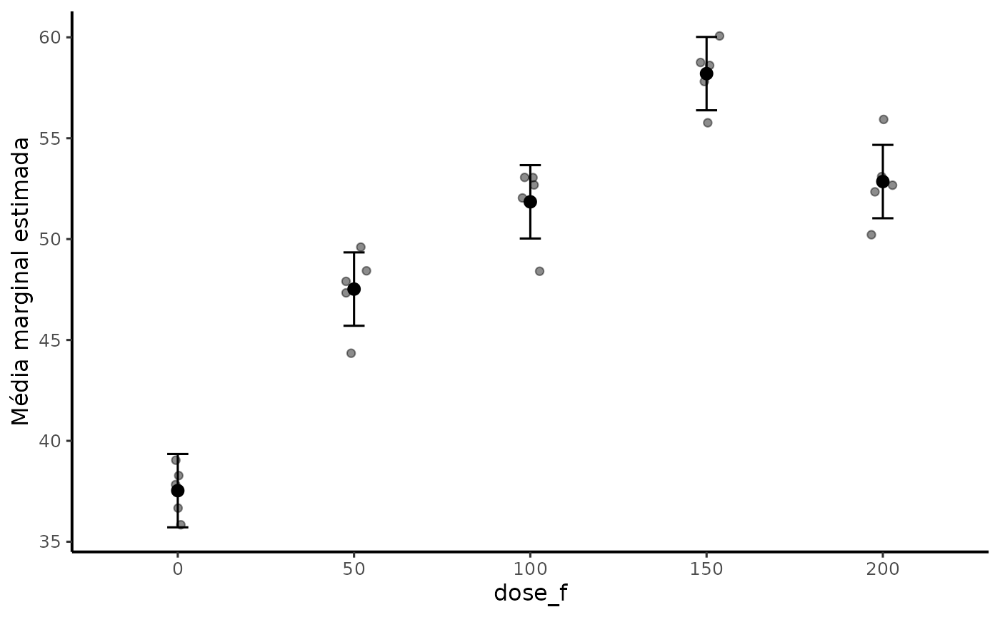

Finalidade
myfuns é uma camada de apoio para análise estatística
aplicada à experimentação agrícola. A versão 0.5.0 preserva as funções
históricas e acrescenta vinte funções para auditoria de delineamentos,
descrição, ANOVA, emmeans, regressão quantitativa,
diagnóstico, modelos mistos, contagens, PCA, Bayes e exportação de
figuras.
A filosofia do pacote é auxiliar o fluxo de trabalho sem substituir decisões científicas. Nenhuma função seleciona tratamento, modelo, distribuição ou grau polinomial apenas com base em um valor de p.
Organização funcional
| Etapa | Funções principais |
|---|---|
| Verificação do banco |
auditar_delineamento(), resumo_agri()
|
| ANOVA |
anovaCV(), anova_agri()
|
| Médias e contrastes |
emmeans_lista(), comparar_emmeans(),
contrast_lista(), cld_lista(),
contraste_poly()
|
| Fatores quantitativos |
reg_poly(), ponto_critico(),
equar2(), plot_reg()
|
| Diagnóstico |
diagnostico_modelo(),
diagnostico_contagem()
|
| Modelos mistos | resumo_misto() |
| Comparação de modelos | comparar_modelos() |
| PCA |
pca_agri(), plot_pca_agri()
|
| Bayes | resumo_bayes() |
| Gráficos |
plot_emmeans(), theme_nogrid(),
theme_nogridacp(), theme_transparent(),
trans
|
| Exportação |
ExportTimes(), export_figuras()
|
| Área de transferência |
read_clipboard_table(),
write_clipboard_table() e aliases históricos |
Exemplo integrado: delineamento em blocos com doses
set.seed(2026)
dados <- expand.grid(
bloco = factor(1:5),
dose = c(0, 50, 100, 150, 200)
)
dados$produtividade <- with(
dados,
40 + 0.20 * dose - 0.00065 * dose^2 +
rep(c(-2, 1, 0, 2, -1), each = 5) +
rnorm(nrow(dados), 0, 2)
)1. Auditar antes de modelar
auditar_delineamento(
dados,
tratamento = dose,
bloco = bloco,
resposta = produtividade
)
#> Auditoria do delineamento
#> -------------------------
#> item valor
#> Observações 25
#> Variáveis do delineamento 2
#> Células ausentes 0
#> Linhas em chaves duplicadas 0
#> Respostas ausentes 0
#> Balanceado 1
#>
#> Mensagens:
#> * Duplicação de unidade experimental não foi avaliada porque `unidade` não foi informada.2. Resumir os dados observados
resumo_agri(dados, produtividade, dose)
#> dose n n_total n_ausentes media dp erro_padrao ic_inferior
#> 1 0 5 5 0 37.53150 1.278029 0.5715517 35.94462
#> 2 50 5 5 0 47.52236 1.964391 0.8785025 45.08325
#> 3 100 5 5 0 51.84689 1.967442 0.8798666 49.40399
#> 4 150 5 5 0 58.20140 1.584726 0.7087110 56.23370
#> 5 200 5 5 0 52.85146 2.048481 0.9161087 50.30793
#> ic_superior mediana q1 q3 minimo maximo cv
#> 1 39.11838 37.83050 36.66672 38.27848 35.84062 39.04118 3.405216
#> 2 49.96148 47.90471 47.33476 48.42742 44.34282 49.60211 4.133615
#> 3 54.28979 52.68357 52.03913 53.04837 48.40624 53.05713 3.794715
#> 4 60.16910 58.60782 57.81013 58.75449 55.76556 60.06900 2.722831
#> 5 55.39499 52.67064 52.34266 53.09641 50.21594 55.93165 3.8759223. Ajustar o fator quantitativo
rp <- reg_poly(dados, produtividade, dose, degree = 1:2)
rp
#> Regressão polinomial
#> --------------------
#> Resposta: produtividade
#> Preditor: dose
#> Modelo principal para predição: grau 2
#>
#> Comparação descritiva dos modelos:
#> grau n R2 R2_ajustado RMSE AIC AICc BIC
#> 1 25 0.6763395 0.6622673 4.042285 146.7874 147.9303 150.4441
#> 2 25 0.9086325 0.9003264 2.147721 117.1673 119.1673 122.0428
#>
#> Teste de falta de ajuste:
#> grau gl_falta_ajuste SQ_falta_ajuste F p_valor
#> 1 3 344.21902 35.698522 3.189170e-08
#> 2 2 51.03499 7.939163 2.897199e-03A tabela comparativa não representa seleção automática. O pesquisador deve avaliar forma da resposta, falta de ajuste, incerteza, domínio experimental, diagnóstico dos resíduos e coerência agronômica.
4. Obter o ponto crítico
ponto_critico(rp)
#> x_critico y_predito classificacao dentro_intervalo ic_inferior ic_superior
#> 1 150.4741 55.76935 máximo TRUE 135.1422 165.8059Delineamento qualitativo e médias ajustadas
dq <- transform(dados, dose_f = factor(dose))
m <- lm(produtividade ~ bloco + dose_f, data = dq)
anova_agri(m)
#> ANOVA agrícola
#> --------------
#> Analysis of Variance Table
#>
#> Response: produtividade
#> Df Sum Sq Mean Sq F value Pr(>F)
#> bloco 4 5.45 1.363 0.3708 0.8259
#> dose_f 4 1197.85 299.462 81.4464 1.989e-10 ***
#> Residuals 16 58.83 3.677
#> ---
#> Signif. codes: 0 '***' 0.001 '**' 0.01 '*' 0.05 '.' 0.1 ' ' 1
#>
#> CV experimental: 3.87%
#>
#> Tamanho de efeito:
#> # Effect Size for ANOVA (Type I)
#>
#> Parameter | Eta2 (partial) | 95% CI
#> -----------------------------------------
#> bloco | 0.08 | [0.00, 1.00]
#> dose_f | 0.95 | [0.90, 1.00]
#>
#> - One-sided CIs: upper bound fixed at [1.00].
cmp <- comparar_emmeans(m, ~ dose_f, method = "pairwise", adjust = "tukey")
plot_emmeans(cmp, data = dq, x = dose_f, y = produtividade)
Contrastes polinomiais com doses reais
emm <- emmeans::emmeans(m, ~ dose_f)
cp <- contraste_poly(emm, scores = c(0, 50, 100, 150, 200), degree = 2)
cp
#> Contrastes polinomiais
#> -----------------------
#> Método: opoly
#> Escores: 0=0, 50=50, 100=100, 150=150, 200=200
#> Espaçamento regular: sim
#>
#> contrast estimate SE df lower.CL upper.CL t.ratio p.value
#> linear 13.066202 0.8575308 16 11.248318 14.884086 15.237 <0.0001
#> quadratic -7.657467 0.8575308 16 -9.475351 -5.839583 -8.930 <0.0001
#>
#> Results are averaged over the levels of: bloco
#> Confidence level used: 0.95Para doses desigualmente espaçadas, contraste_poly() usa
opoly quando normalized = TRUE, preservando os
valores quantitativos informados em scores.